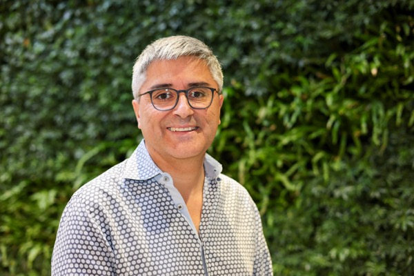
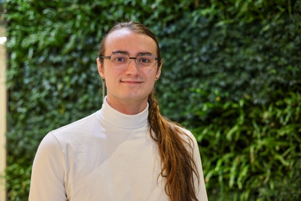
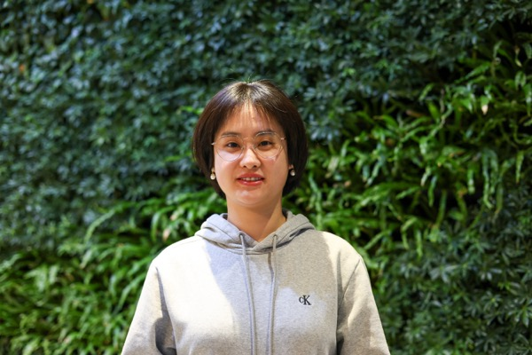

Principal Investigator

René Vidal
Rachleff University Professor, Perelman School of Medicine and School of Engineering and Applied Science
Penn AI Council, Co-Chair | IDEAS, Director
University of Pennsylvania
René Vidal is the Rachleff and Penn Integrates Knowledge (PIK) University Professor of Electrical and Systems Engineering & Radiology and the Director of the Center for Innovation in Data Engineering and Science (IDEAS) at the University of Pennsylvania. He is also the director of THEORINET, an NSF-Simons Collaboration on the Mathematical Foundations of Deep Learning, an Amazon Scholar, and an Affiliated Chief Scientist at NORCE. His current research focuses on the foundations of deep learning and trustworthy AI and its applications in computer vision and biomedical data science.
Staff
Current PhD Students






Former Post-doctoral Researchers
- Hancheng Min '25
- Guilherme França '20
- Zhihui Zhu '19
- Manolis Tsakiris '17
- Shahin Sefati '16
- Bijan Afsari '15
- Erdem Yoruk '13
- Aastha Jain '13
- Luca Zappella '12
- Diego Rother '11
- Nash Ravichandran '11
- Mihaly Petreczky '06
Former PhD Students
- Aditya Chattopadhyay '24
- Carolina Pacheco '24
- Ambar Pal '24
- Efi Mavroudi '22
- Tianyu Ding '21
- Flori Yellin '20
- S. Mahendran '18
- Chong You '18
- Evan Schwab '17
- Giann Gorospe '17
- Lingling Tao '16
- Manolis Tsakiris '16
- Colin Lea '16
- Ben Haeffele '15
- Roberto Tron '12
- Rizwan Chaudhry '12
- Ehsan Elhamifar '12
- Ertan Cetingul '11
- Nash Ravichandran '10
- Dheeraj Singaraju '10
- Alvina Goh '10
Former Masters Students
- Prashast Bindal '21
- Connor Lane '19
- Ron Boger '17
- Benjamin Bejar '12
- Jixin Li '10
- Gagan Bansal '09
- Atiyeh Ghoreyshi '06
Former Undergraduate Students
- Shreya Wadhwa '20
- Stewart Slocum '19
- Nicolas Jimenez
- Solomon Liu
- Sampreet Niyogi
Former Interns / REU Students
- Derek Lim '20
- Alejandro Barrera '19
- Evan Frenklak '18
- Ksenia Lekomtceva '18
- Max Lu '18
- Imke Mayer '18
- Larissa Clopton '17
- Divya Bhaskara '16
- Alexander Serrano '15
- Quin Liu '13
- Patrick McClure '12
- James Breen '11
- Aline Elad '10
- Leyla Isik '09
Visiting Students
- Salma Tarmoun
- Julio Hurtado
- Turan Orujlu
- Johannes Stetten
- Jacopo Cavazza
- Claire Donnat
- Soren Wolfers
- Bertrand Rondepierre
- Hans Lobel
- Islem Rekik
- Laurent Bako
- Andreas Beckers
- Matthias Behnisch
- Annalisa Epifani
- Behrooz Nasihatkon
- Simon Schuetz
- Lucas Theis
- Roberto Tron
- Martin Wojkowsky
Rotation Students
- Dan Abretske
- Xiaodong Fan
- Yasmin Hashambhoy
- Tara Johnson
- Merve Kaya
- David Kim
- Ting Li
- Congyuan Yang
- Michael Abboud